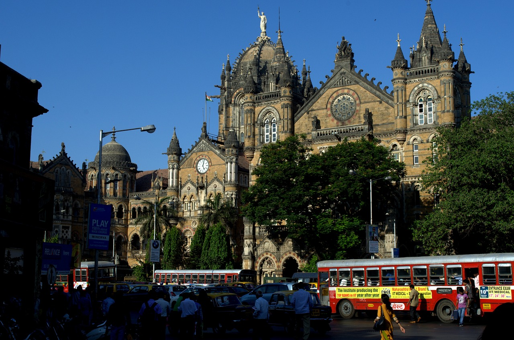
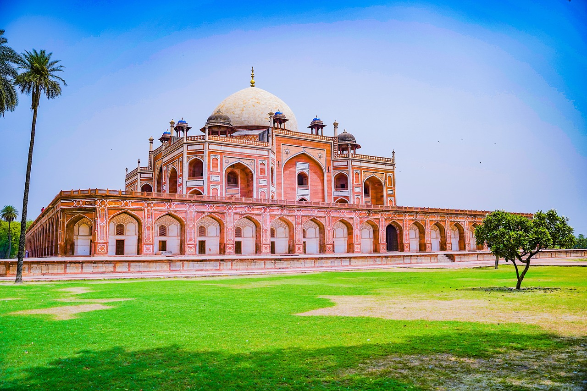

What are Heritage Sites?
Heritage sites are landmarks or areas that have been recognized for their cultural, historical, scientific, or other significance and are legally protected by international treaties or national laws.
Role of UNESCO
UNESCO (United Nations Educational, Scientific and Cultural Organization) plays a crucial role in identifying and preserving heritage sites globally through its World Heritage Convention. It designates and protects sites of outstanding universal value.
How to Preserve Heritage Sites?
Preservation of heritage sites involves various measures such as conservation, restoration, documentation, and education. It requires collaboration between governments, local communities, and organizations.

Why Heritage Sites are Important?
Heritage sites are important because they represent our shared cultural and natural heritage, fostering a sense of identity and belonging. They also contribute to tourism, economic development, and sustainable livelihoods.

Types of Heritage Sites
Heritage sites can be categorized into different types, including cultural, natural, and mixed properties. Cultural sites encompass monuments, archaeological sites, and urban centers, while natural sites include landscapes, ecosystems, and geological formations. Mixed sites have both cultural and natural significance.

Challenges in Heritage Conservation
Conserving heritage sites faces numerous challenges such as urbanization, pollution, natural disasters, climate change, and unsustainable tourism. Balancing preservation with development needs and ensuring community involvement are essential for effective conservation.